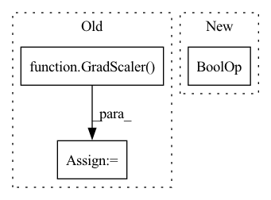

Pattern ID :11822
Before Change
self.amp = amp
self.scaler = GradScaler(enabled = amp)
self.optim_kwargs = dict(lr=lr, wd=wd, eps=eps, group_wd_params=group_wd_params)
self.optimizer = get_optimizer(After Change
// mixed precision checks
if (
exists(self.accelerator)
and self.accelerator.distributed_type == DistributedType.DEEPSPEED
and self.diffusion_prior.clip is not None
) :
// Then we need to make sure clip is using the correct precision or else deepspeed will error
cast_type_map = {
"fp16": torch.half,In pattern: SUPERPATTERN
Frequency: 3
Non-data size: 3
Instances Fragment ID: 39669241
Project Name: lucidrains/dalle2-pytorch
Commit Name: f9423d308b6f36e51152c2c45045ff4ebb308287
Time: 2022-07-20
Author: 51308183+nousr@users.noreply.github.com
File Name: dalle2_pytorch/trainer.py
M Class Name: DiffusionPriorTrainer
N Class Name: DiffusionPriorTrainer
M Method Name: __init__(10)
N Method Name: __init__(12)
M Parent Class: nn.Module
N Parent Class: nn.Module
M File Name: dalle2_pytorch/trainer.py
N File Name: dalle2_pytorch/trainer.py
M Start Line: 182
M End Line: 240
N Start Line: 177
N End Line: 246
Before Change
if self.use_ema:
self.ema_unets.append(EMA(unet, **ema_kwargs))
scaler = GradScaler(enabled = amp)
setattr(self, f"scaler{ind}", scaler)
scheduler = warmup_scheduler = None
After Change
self.imagen = imagen
self.num_unets = len(self.imagen.unets)
self.use_ema = use_ema and self.is_main_process
self.ema_unets = nn.ModuleList([])
// keep track of what unet is being trained on
// in distributed training, only going to allow 1 unet training at a time Fragment ID: 39669240
Project Name: lucidrains/imagen-pytorch
Commit Name: 5e2b82badff93a7feedffa07650a9499c7f86fc6
Time: 2022-07-12
Author: lucidrains@gmail.com
File Name: imagen_pytorch/trainer.py
M Class Name: ImagenTrainer
N Class Name: ImagenTrainer
M Method Name: __init__(18)
N Method Name: __init__(16)
M Parent Class: nn.Module
N Parent Class: nn.Module
M File Name: imagen_pytorch/trainer.py
N File Name: imagen_pytorch/trainer.py
M Start Line: 185
M End Line: 264
N Start Line: 193
N End Line: 303
Before Change
scheduler_postflow = WarmupScheduler(optimizer_postflow, peak_lr=lr, warmup_steps=warmup_steps,
max_steps=phase_1_steps + phase_2_steps - postnet_start_steps)
grad_scaler = GradScaler()
grad_scaler_postflow = GradScaler()
epoch = 0
if resume:
path_to_checkpoint = get_most_recent_checkpoint(checkpoint_dir=save_directory)
if path_to_checkpoint is not None:After Change
optimizer.zero_grad()
optimizer_postflow.zero_grad()
if step_counter > postnet_start_steps and not torch.isnan(glow_loss) :
train_loss = train_loss + glow_loss
grad_scaler.scale(train_loss).backward() Fragment ID: 39669239
Project Name: digitalphonetics/ims-toucan
Commit Name: f602045d362a5da3119066ffc47b09771ed11b7e
Time: 2023-02-05
Author: lux.florian@gmail.com
File Name: TrainingInterfaces/Text_to_Spectrogram/PortaSpeech/portaspeech_train_loop.py
M Class Name: AnonimousClass
N Class Name: AnonimousClass
M Method Name: train_loop(16)
N Method Name: train_loop(16)
M Parent Class:
N Parent Class:
M File Name: TrainingInterfaces/Text_to_Spectrogram/PortaSpeech/portaspeech_train_loop.py
N File Name: TrainingInterfaces/Text_to_Spectrogram/PortaSpeech/portaspeech_train_loop.py
M Start Line: 88
M End Line: 232
N Start Line: 88
N End Line: 219